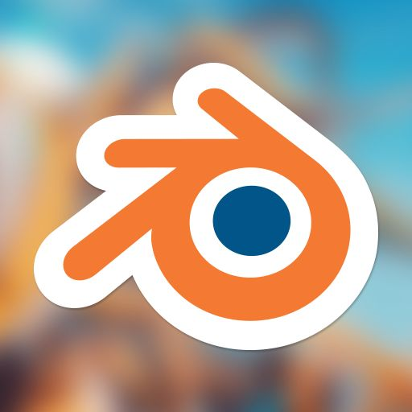
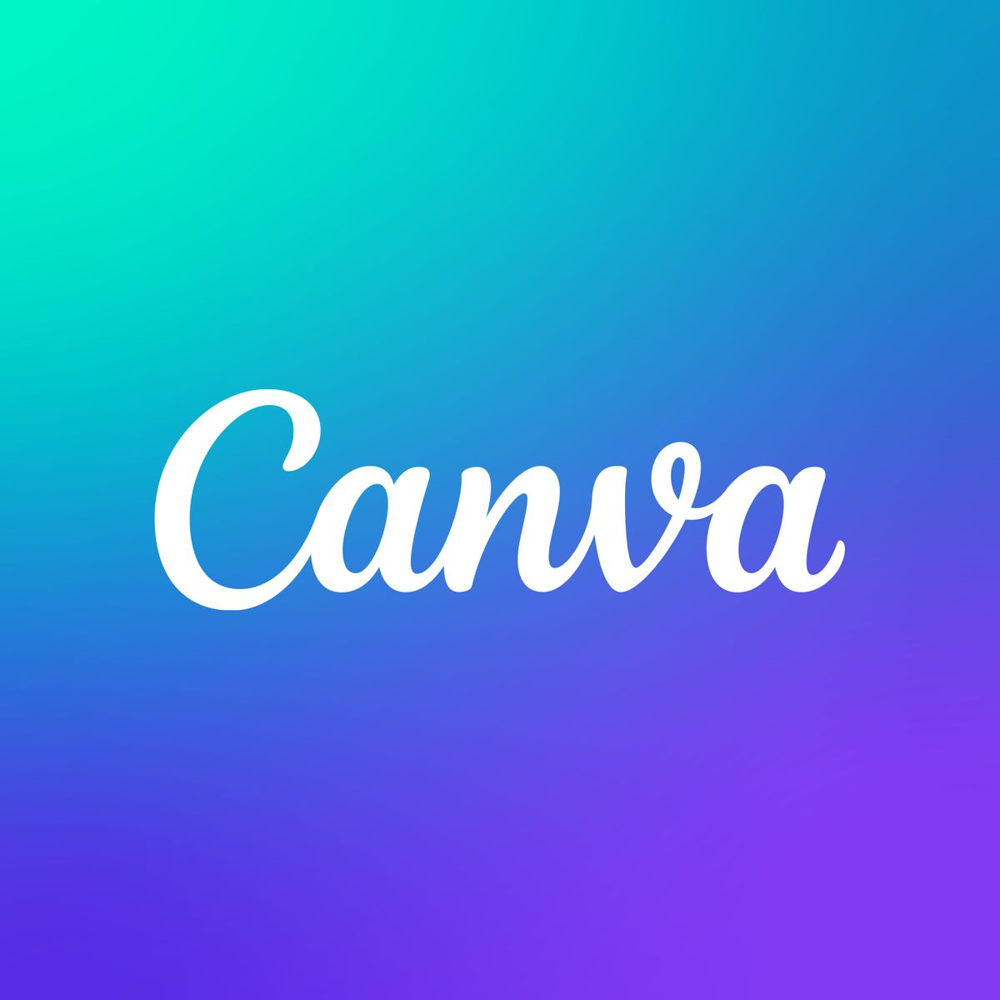
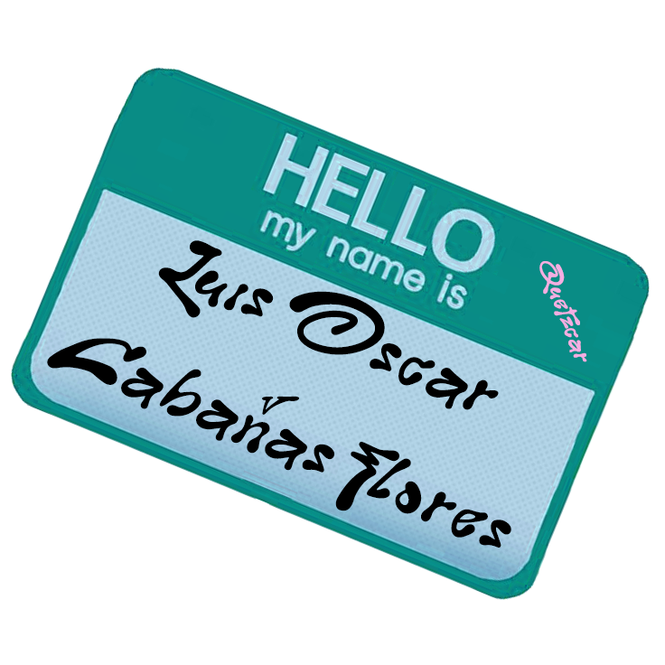
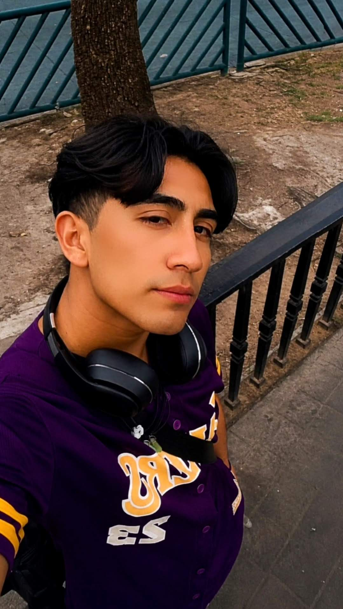

Sobre mí
Un gusto soy Luis Oscar Cabañas Flores, de 22 años, soy de nacionalidad mexicana y estudiante de Diseño y comunicación visual, próximamente licenciado, enfocado en dibujo tradicional y en ilustración digital, animación, edición, entre otras. Mi trabajo explora emociones, experiencias, reflexiones y adaptaciones e interpretaciones desde una mirada sensible, cultural, colorida y híbrida.
Me interesa el arte como espacio de conexión, reinvención, reflexión y acompañamiento, así como su capacidad para comunicar mensajes atraves del medio visual. Aparte desde pequeño siempre me ha fascinado cualquier tipo de artes por lo cuál al dedicarme a ello es un gran sueño cumplido, por lo cuál la mayoría de mis trabajos son una simbiosis de mis gustos como series, música, arte, videojuegos, etc.. junto con mi cultura y mi personalidad.
Softwares






Fecha de nacimiento y Residencia
11 de Enero del 2004
Ciudad de México
Formación
Licenciatura en Diseño y Comunicación Visual
Facultad de Estudios Superiores de Cuautitlán UNAM
Experiencias y habilidades
Tengo experiencia en dibujar en lápiz desde pequeño y que aún sigo puliendo, también en diversas técnicas y áreas como coloreado con lapices de madera, bodegón, reiterpretación o adaptación, composición figurativa, stop motion (dibujo en movimiento), dibujo con modeló, dibujo dígital, carboncillo, serigrafía, sublimación, impresión en linóleo y en tetra pack, fotografía analógica y dígital, sanguina, pastel, acuarela, spray, aerógrafo, crear flyers para eventos, edición de videos y manejo de programas como Canva, Photoshop, Illustrator y Blender. Manejo básico de manualidades y artesanías, y en proceso de ser un todologo en más áreas, técnicas y artes.